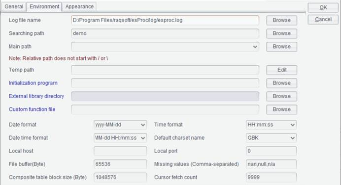
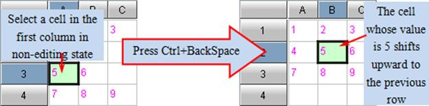
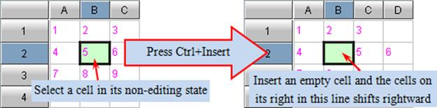
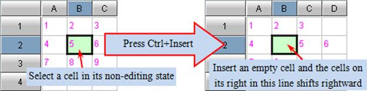
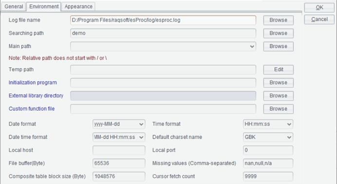
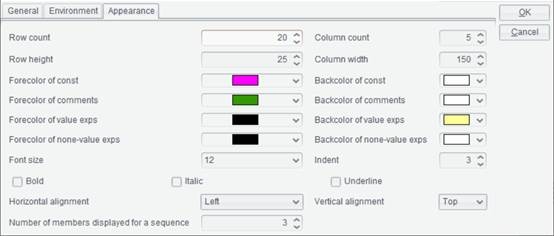
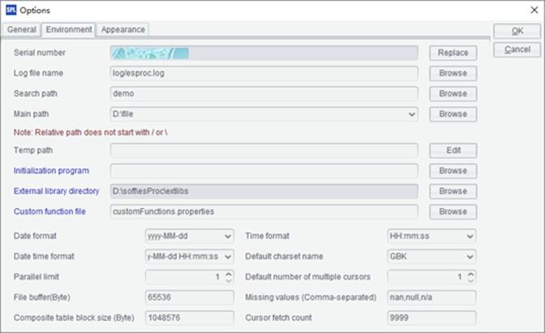

1.3.1 esProc data types
This section explains the data types esProc supports and the functions for judging data types. esProc provides the following basic data types:
Integer
32-bit integers between -231 ~ 231-1, that is, the value range is -2147483648~2147483647. The type conversion function int() is used to convert other types of data into a 32-bit integer.
Long integer
64-bit integers between -263~263-1; the value range is bigger than that of the integer type data. The type conversion function long() is used to convert other types of data into a long integer.
A long integer can be specially represented by appending a capital letter L to an integer. Compared with integers, long integers have a bigger value range. Strings starting with 0x can be used to represent the hexadecimal long integers:
|
|
A |
|
1 |
=123456789L*1000 |
|
2 |
=123456789*1000 |
|
3 |
=12345678900*10 |
|
4 |
0x00FF |
The value range of common integers is -231~231-1, that is, -2147483648~2147483647. The result in A2 is beyond the boundary and automatically converted to a long integer. While by using a long integer in A1, the value range is increased to -263~263-1 and result is naturally obtained without the need of type conversion. In A3, the number 12345678900 is beyond the value range of common integers and will be parsed automatically into a long integer. It is a hexadecimal constant that cell A4 contains. Values of A1, A2, A3 and A4 are as follows:
 
As can be seen from the results of A1 and A3, if one of the operands involved in an operation is a long integer, the result will also be a long integer. In esProc, numeric values are displayed right-aligned. Integers are in blue and long integers are in black.
Floating-point number
64-bit floating-point numbers, the commonest data type esProc uses, are involved in almost all decimal-related computations. The type conversion function float() is used to convert other types of data to a floating-point number. Because floating-point numbers are stored in binary format, there could be errors in the computations.
|
|
A |
|
1 |
43.41 |
|
2 |
-4.45E13 |
|
3 |
3% |
|
4 |
=float(54) |
Values of A1, A2, A3 and A4 are as follows:
 

The floating-point number in A2 is represented in scientific notation. A3 contains a floating-point number represented by a percentage, which can be only used in a constant cell, instead of in an expression. As shown above, floating-point numbers will be displayed in dark pink.
Big decimal
Big decimal is the most error-free way to store a real number, yet it uses more memory and has a low computational efficiency. The type conversion function decimal() is used to convert other types of data (such as the string type data) into a big decimal.
|
|
A |
|
1 |
5.2 |
|
2 |
=A1*A1 |
|
3 |
=decimal("5.2") |
|
4 |
=A3*A3 |
5.2 in A1 is a floating-point number; A3 converts the string ¡°5.2¡± into a big decimal. The results in A2 and A4 are as follows:

It can be seen that the calculation involving a binary-format floating-point number gets an inacurrate result, while the calculation using a big decimal has an accurate one. The result of computing a big decimal is also a big decimal. esProc displays big decimal in red.
Real number
The real number covers four data types: integer, long integer, floating-point number and big decimal. number() is the type conversion function for converting other types of data to a real number.
Boolean
This data type stores true or false value.
|
|
A |
|
1 |
true |
|
2 |
false |
|
3 |
=4>2 |
|
4 |
=13%3==0 |
Values of A1, A2, A3 and A4 are as follows:

String
When used in an expression, this type of data needs to be double quoted and uses the right slash \ as the escape character if needed. If the string data is defined as a constant directly, the double quotation marks are not needed. string() function is used to convert other types of data to strings. When concatenating two strings x and y using an expression, you can add a space between them, that is, x y; or just add them up like x+y. The latter requires that both x and y are strings.
Becasuse if one of them is a real number, the result will be a real number, rather than a string. To concatenate a real number and a string as concatenating two strings, you can use x/y, whose result will be a string - as long as one of the operands is a string.
The esProc rule of escaping strings is the same as that of JAVA. For details, please refer to Escape Character.
|
|
A |
|
1 |
Amy |
|
2 |
="State:\tTX" |
|
3 |
="Texas"/"Dallas" |
|
4 |
=A1+3.14 |
|
5 |
=A1/3.14 |
Values of A1, A2, A3, A4 and A5 are as follows:

Datetime
This type of data is written in the format of yyyy-mm-dd and hh:mm:ss. Type conversion functions - date(), time() and datetime() - are used to convert string data or long integer data to a date, time, or datetime.
|
|
A |
|
1 |
2014-10-5 |
|
2 |
22:15:30 |
|
3 |
=date("2014" "-10" "-5") |
Values of A1, A2 and A3 are as follows:
Besides being able to convert strings into a date, the date function in A3 can generate a date value by setting the year, month and date, like date(2014,10,5), which produces a same result.
In esProc, boolean data, string data, and datetime data are displayed left-alligned and in black.
Click Tool -> Options on the menu to set the format of time/date data, the character code, and other options on the Environment tab.
Note: Precision may be sacrificed when a certain type of data is converted into another type of data.
Serial byte
A serial byte looks the same as an integer, but it is stored in a specified number of bytes. The maximum number of bytes a serial byte occupies is 16, which is 128 bits. The serial byte data is used as key values in a table. It is comparable but non-computable. Two serial byte values are compared byte to byte rather than as two numbers.
|
|
A |
B |
|
1 |
=k(1111:2) |
=A1.len() |
|
2 |
=A1.sbs(1) |
=A2.len() |
|
3 |
=k(1111:4) |
=A3.len() |
|
4 |
=[A3.sbs(1),A3.sbs(2),A3.sbs(3),A3.sbs(4)] |
=k(0,0,4,87) |
|
5 |
=A3==B4 |
=A3==A1 |
|
6 |
=k(111,0,0,4,0,0,0,87) |
=k(133,255,0,128,0,0,0,0) |
|
7 |
=A6<B6 |
=k(A6.sbs(5), A6.sbs(3:4), A6.sbs(8)) |
A1 generates a serial byte taking up 2 bytes from integer 1111 using k(n: l) function. To find the number of bytes in a serial byte value, use k.len() function. Below are results of A1 and B1:
 
A serial byte value is displayed as an integer, but it isn¡¯t an integer. When viewed in a cell, a serial byte value will be displayed in hexadecimal notation bit by bit.
Use k.sbs(n) function to get a certain byte of a serial byte value to generate an integer. A2 gets the integer made up of A1¡¯s first byte. Actually, each integer has four bytes. Below are results of A2 and B2:
A3 generates a serial byte of 4 bytes using integer 1111. A4 looks up the value of each byte in A3¡¯s serial byte. We can also generate a serial byte by specifying byte values through k(ni,¡) function. Below are results of A3, B3, A4, and B4:

A5 and B5 compare A3¡¯s serial byte value with those in B4 and A1 respectively. A3 and B4 are equal. However, two serial bytes values made up of different number of bytes are not equal even if they look the same. Below are results of A5 and B5:
To generate a serial byte through k(ni,¡) function, each byte value should be an integer (¡Ý0 &¡Ü255) and consists of 8 bytes at most. Below are results of A6 and B6:
B6¡¯s serial byte value is greater than A6 because the comparison is performed between byte values one by one. Serial byte values are incomparable if they don¡¯t contain the same number of bytes. Below is A7¡¯s result:
Besides k(n,¡) that gets a specified byte from serial byte value k to generate a new serial byte value, we have k(n:l,¡) to specify one or more bytes to generate a new serial byte value. Below is result of B7:
B7¡¯s expression and B4¡¯s expression k(0,0,4,87) have same effect, but the former specifies the middle two bytes at a time and gets bytes from A6¡¯s serial byte value.